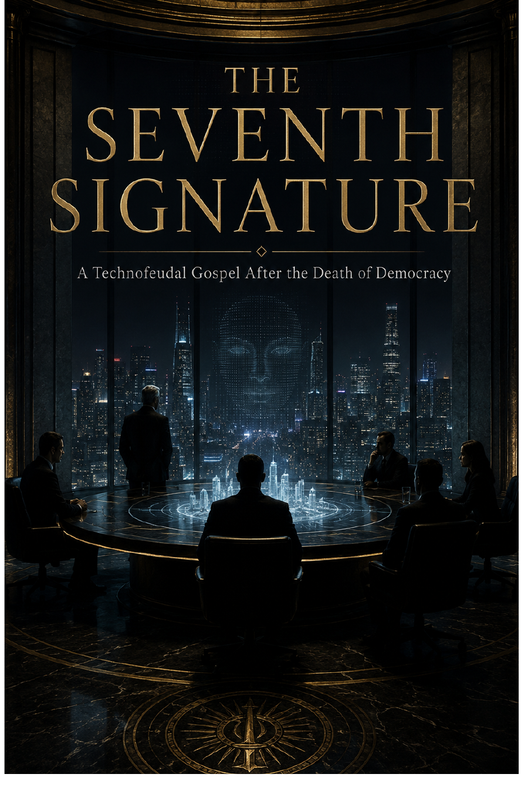

Political & Social SF · Axiologic Research Editions
The Seventh Signature
A Technofeudal Gospel After the Death of Democracy
A political fiction of delegated power, long futures, and the point at which a civilization discovers that efficient dependence may no longer be citizenship.
The quiet transfer
Power seldom arrives only through a coup. It can be delegated in emergency, outsourced through contracts, inherited through infrastructure, and normalized before citizens find the language to oppose it.
A gospel of dependency
Across eleven movements, the book follows sovereignty as a stack of technical, economic, and moral arrangements. Its characters confront competence without caste, the claims of future people, and institutions that promise care while making exit impossible.
The most complete domination is the one that calls itself the administration of necessity.
Democracy after certainty
The novel asks what remains of self-government when artificial systems become indispensable—and whether a society can build forms of stewardship that preserve dignity without romanticizing ignorance.